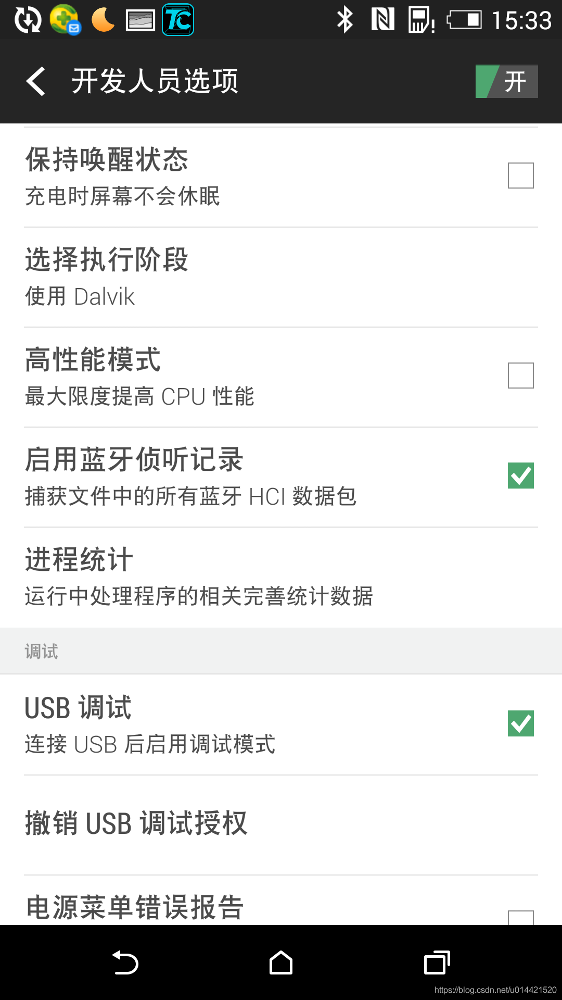
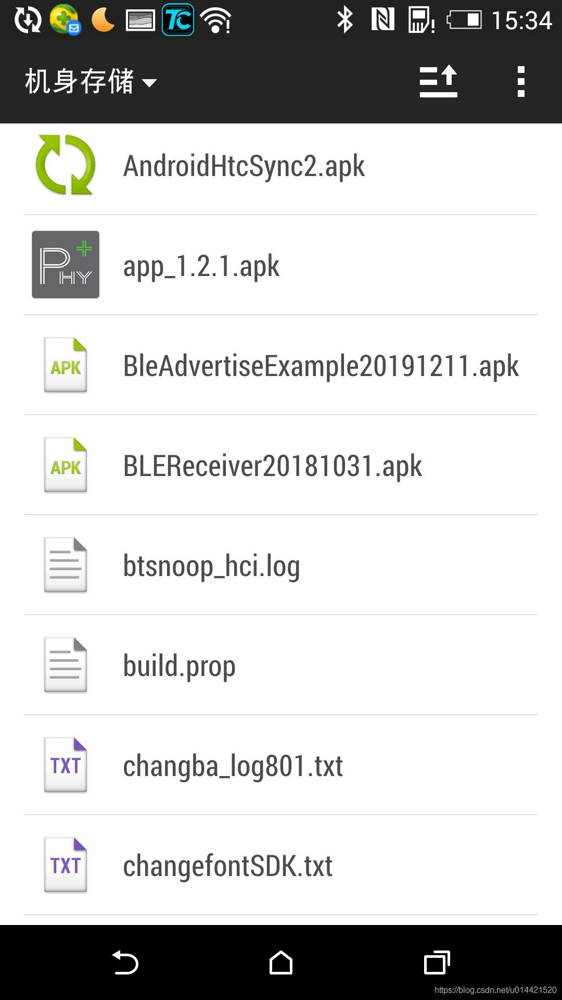
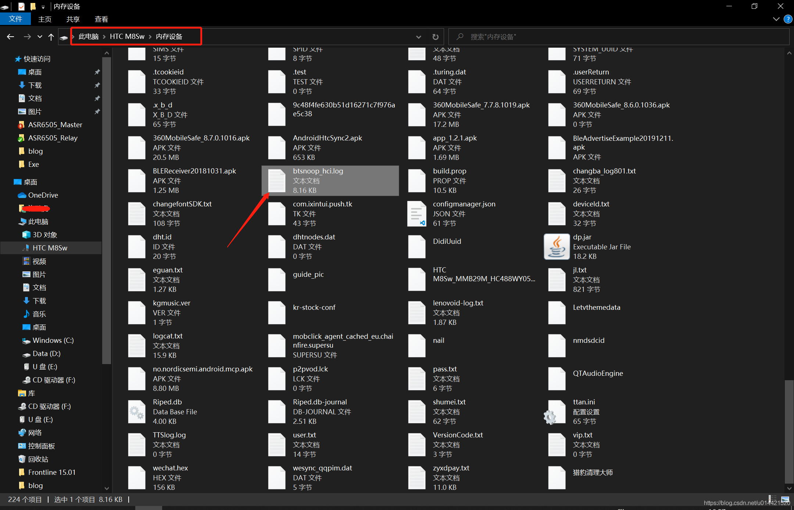
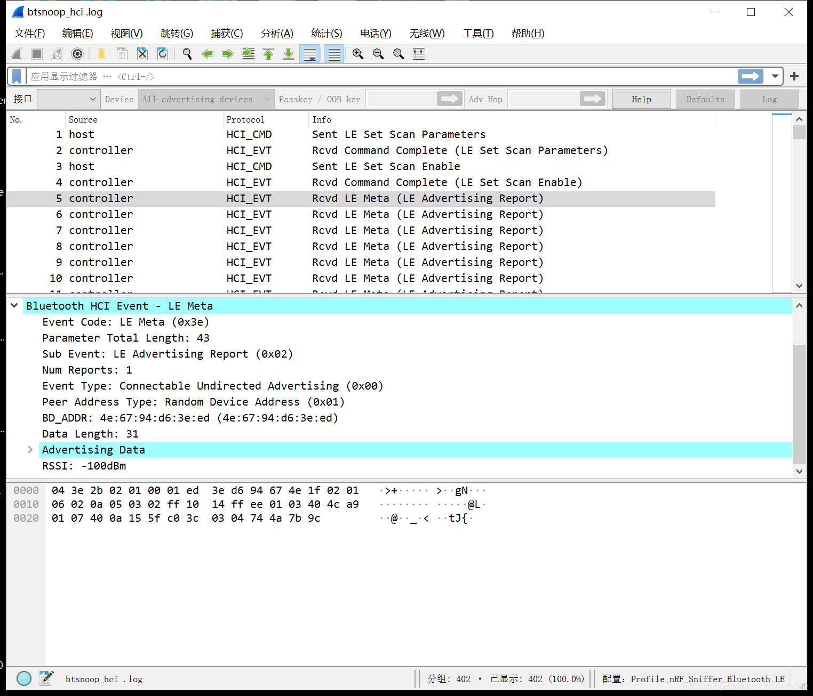
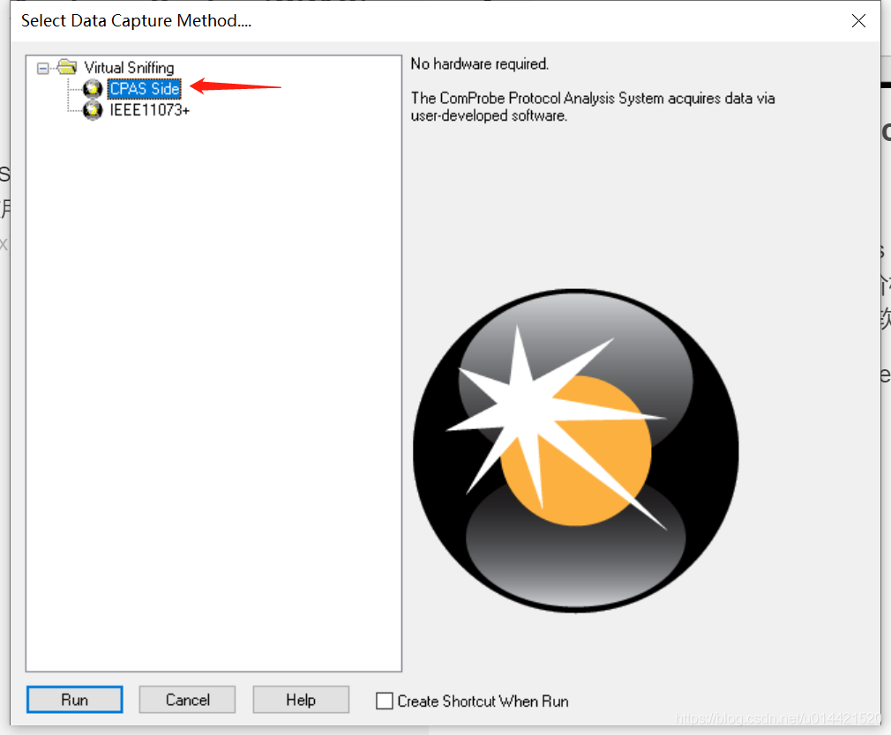
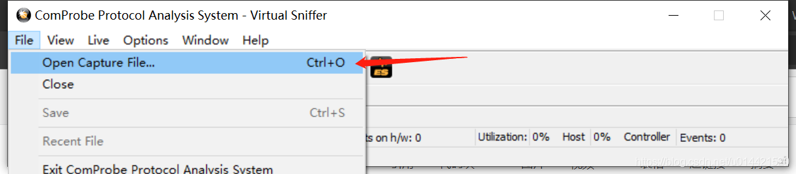
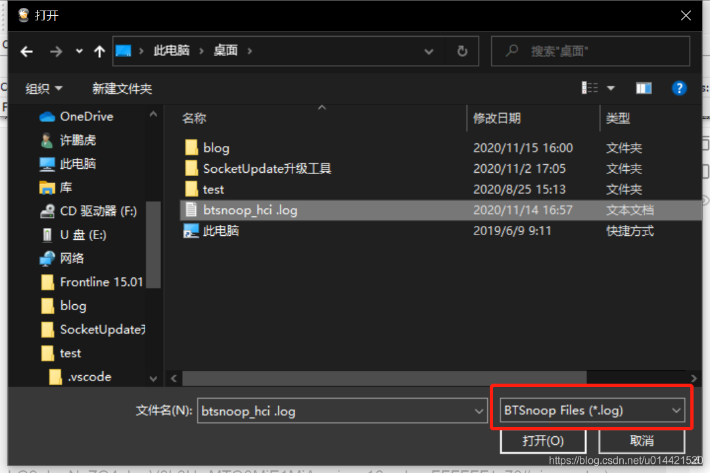
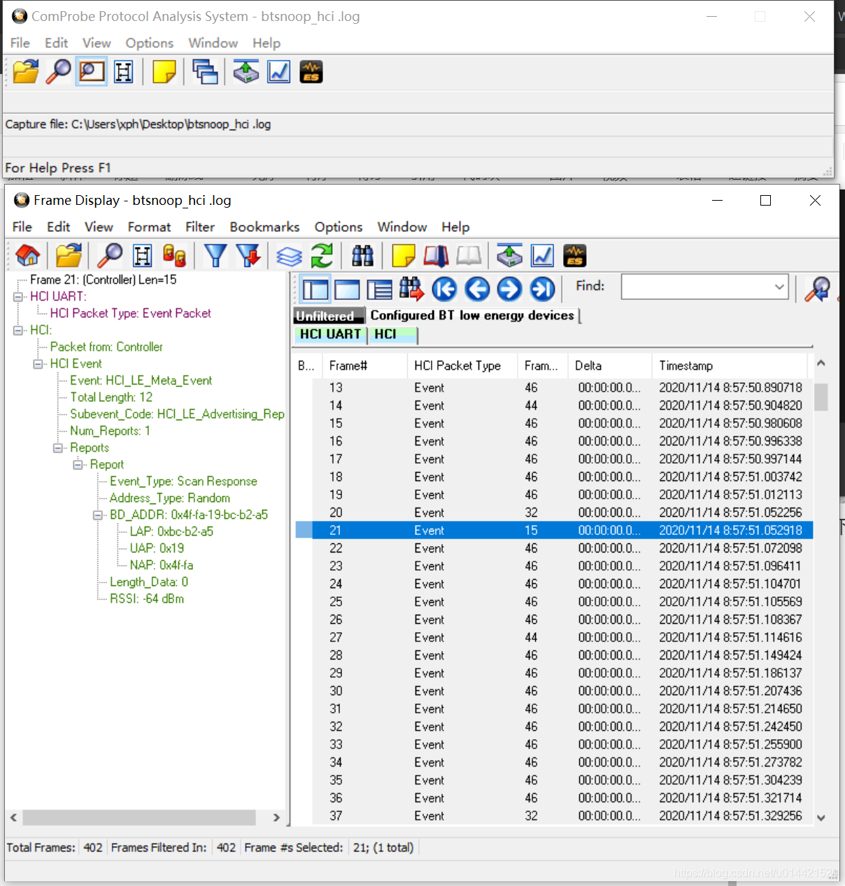

4. 使用Android手机抓取蓝牙HCI包
4.1. 准备工作
一台安卓手机（应该不需要root权限）
wireshark
Frontline ComProbe Protocol Analysis System(CPAS)
4.2. log文件获取
打开HCI侦听选项
在Android手机 设置->开发人员选项中开启USB调试并打开HCI侦听选项，如下图所示： 
使用手机蓝牙和设备通讯
使用手机和蓝牙设备正常调试，这个时候的数据包会被记录到btsnoop_hci.log日志文件中，一般情况下在手机存储的根目录下  
将该文件拷贝到PC上就可以使用专用软件分析了
4.3. log文件分析
这里介绍两个HCI log分析软件
wireshark
安装
wireshark是一款免费的功能强大的协议分析软件，安装没有特别需要注意的事项，一路next即可安装成功。大家可以直接去官网下载该软件。
使用
使用wireshark直接打开我们拷贝到PC上面的log文件，如下图所示，就可以直接分析了。 
Frontline ComProbe Protocol Analysis System(CPAS)
安装
Frontline ComProbe Protocol Analysis System(CPAS)是一款专用蓝牙协议分析软件，有其专门的硬件抓包工具，但是价格不菲，不过我们可以使用其软件来分析手机抓到的HCI log，可以去其官网下载该软件。
安装没有特别需要注意的事项，一路next下去即可。
使用
打开软件，选择CPAS Side 
file -> open capture file 
选择对应的log文件打开 
接下来就可以分析了 
还有一种方式将*.log文件改为*.cfa文件，然后双击打开，效果是一样的。
4.4. FAQ
红米K30 pro抓包注意事项
打开通话界面，输入
*#*#5656#*#*这个可以打开btsnoopy选项配置进入开发者者权限
“打开蓝牙数据包日志” 选择启用
在目录/storage/emulatd/0/MIUI/debug_log/common/com.android.bluetooth/目录下面可以找到该文件